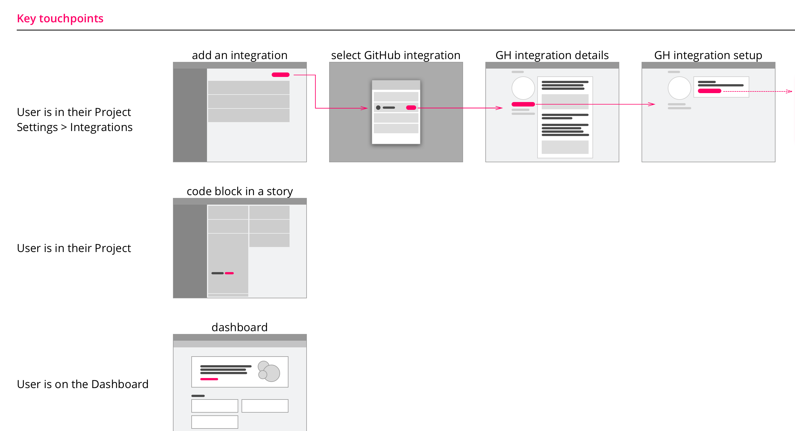

Pivotal Tracker Integrations
UX Design, Interviews, Concept Testing, Wireframing, Prototyping, Design Lead
Overview
Pivotal Tracker is an agile product management tool that helps keep teams on track. With a shared view of team priorities, a process that fosters collaboration, and dynamic tools to analyze progress, your team will deliver more frequently and consistently.
Designing Integrations
We have been working on a new way to manage and connect integrations across a team's account. Integrations have always been managed at each individual project level but as teams grow and the need for multiple projects arise it can become challenging to manage and share integrations across an account.
I started with an exploration of how we can move integration management to the account level while still maintaining a seemless flow for users that primarily spend their time within a few projects.
User Flows
One of the first integrations we started with was our GitHub integration. We found that 80% of our users are using GitHub but only a small portion were actually using the existing integration. The reason for this is a combination of limited functionality and low visibility and communication within the product that the integration even exists.
I started exploring and mapping out how a user would discover this and other integrations within the app with a basic user flow showing the key touchpoints.
After mapping out the key toucpoints at a project and account level we got feedback from people on the team (Test/Supoort, Developers, Designers, PMs). Throughout this process we were talking to customers to make sure we were going down the right path. We used InVision mocks and prototypes to have users walk through discovering and configuring an integration to identify any points of confusion. As we found areas in the flows we needed to adjust, we would go back, iterate, and then test some more.